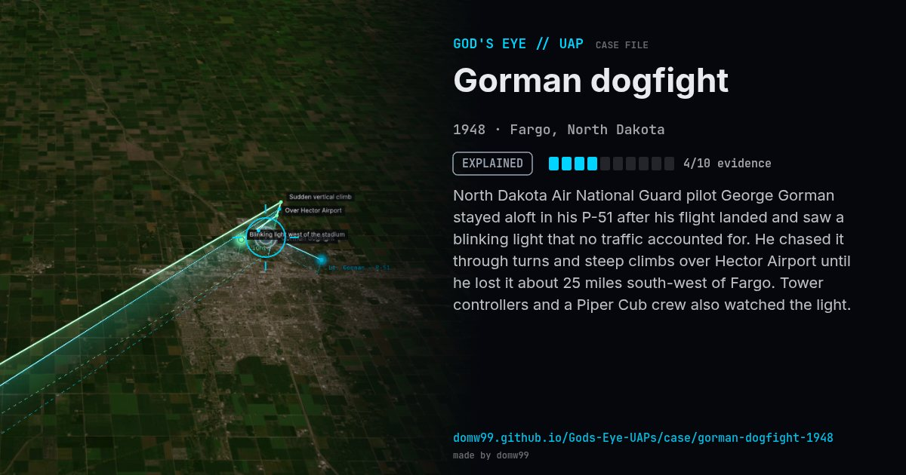

Gorman dogfight
EXPLAINED

North Dakota Air National Guard pilot George Gorman stayed aloft in his P-51 after his flight landed and saw a blinking light that no traffic accounted for. He chased it through turns and steep climbs over Hector Airport until he lost it about 25 miles south-west of Fargo. Tower controllers and a Piper Cub crew also watched the light.
Explanation
The Air Force concluded in 1949 that Gorman had chased a lighted weather balloon.
What was seen
Shape: Small blinking ball of light
Witnesses: P-51 pilot, Piper Cub crew, tower controller
Duration: About 27 minutes
Browse
- United States
- 1940s
- Explained
- Military encounters
- Official government documents
- Many independent witnesses
- Pilot and aircrew witnesses
- Lights and fireballs
- Spheres and orbs